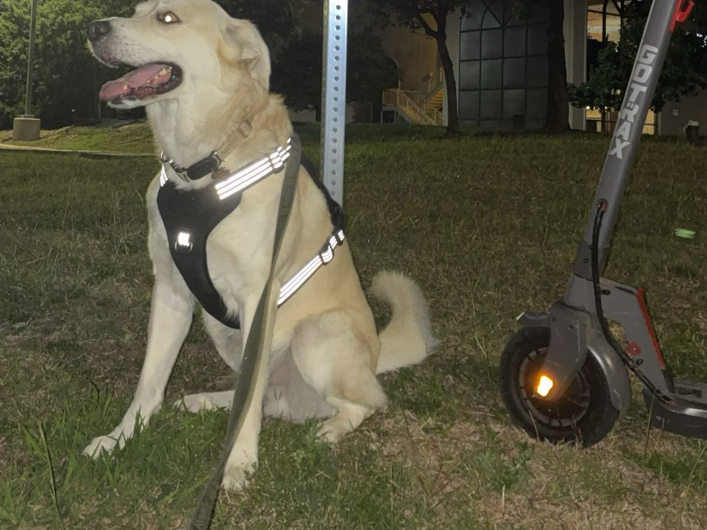
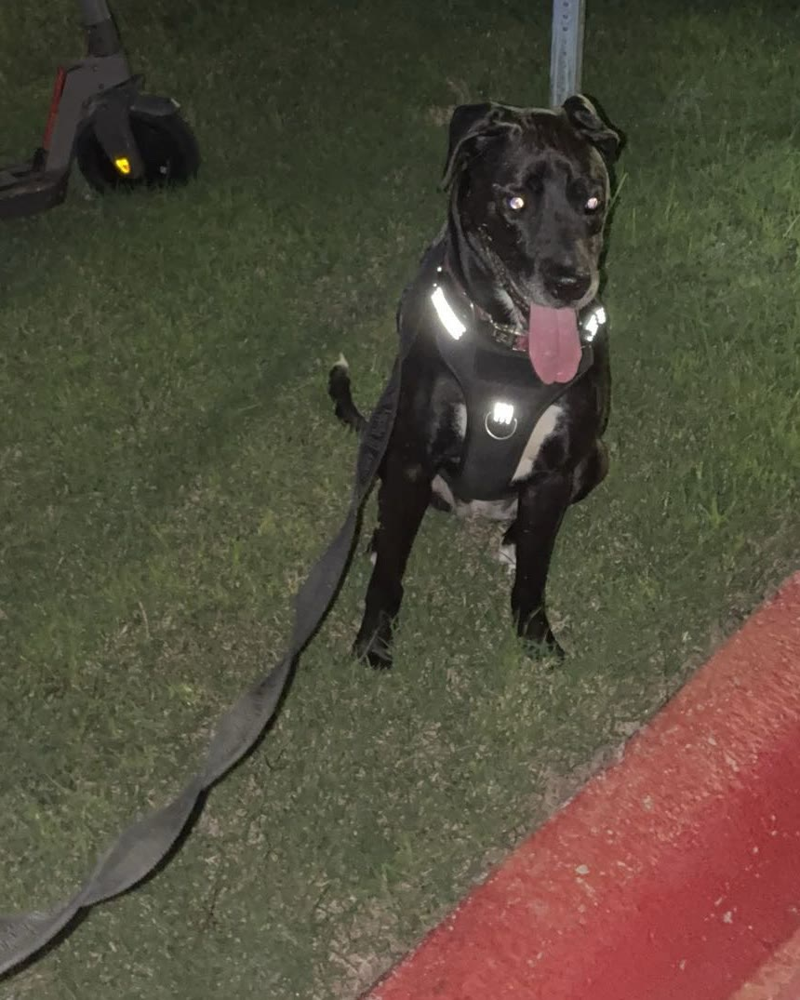

Austin, Texas
Dog mushing in Austin
Austin Dog Mushing is an informal, unincorporated community for dryland and urban mushers. The site is a short guide and a forum.
Outings here are on paths and quiet streets, without snow. E-scooter mushing, with two dogs and an electric kick scooter, is part of daily practice.


Evening practice in Austin.